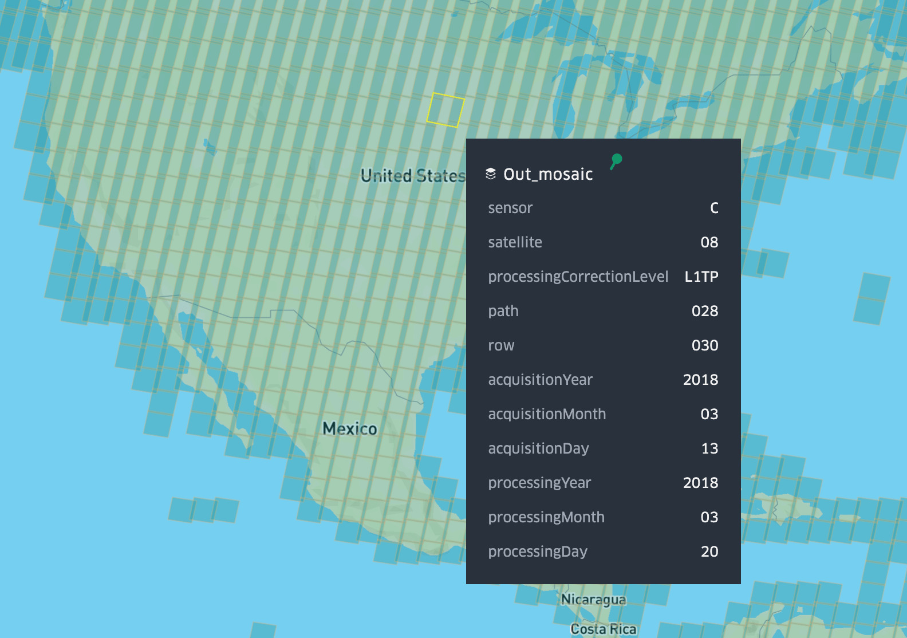

CLI¶
create¶
Usage: landsat-cogeo-mosaic create [OPTIONS] LINES
Create MosaicJSON from STAC features
Options:
--min-zoom INTEGER Minimum zoom [default: 7]
--max-zoom INTEGER Maximum zoom [default: 12]
--quadkey-zoom INTEGER Zoom level used for quadkeys in MosaicJSON.
Lower value means more assets per tile, but
a smaller MosaicJSON file. Higher value
means fewer assets per tile but a larger
MosaicJSON file. Must be between min zoom
and max zoom, inclusive.
-b, --bounds TEXT Comma-separated bounding box: "west, south,
east, north"
--optimized-selection / --no-optimized-selection
Attempt to optimize assets in tile. This
optimization implies that 1) assets will be
ordered in the MosaicJSON in order of cover
of the entire tile and 2) the total number
of assets is kept to a minimum. [default:
True]
--season [spring|summer|autumn|winter]
Season, can provide multiple
--help Show this message and exit.
Example¶
features.json is output from landsat-cogeo-mosaic search.
landsat-cogeo-mosaic create \
--bounds '-127.64,23.92,-64.82,52.72' \
--min-zoom 7 \
--max-zoom 12 \
--quadkey-zoom 8 \
--optimized-selection \
--season summer \
features.json > mosaic.json
create-from-db¶
Create MosaicJSON from SQLite database of Landsat features.
This is the fastest and most efficient way of creating a large Landsat MosaicJSON, and I recommend it especially for global mosaics. But first you need to create a local SQLite database of Landsat metadata.
Metadata Download¶
Make sure you're in the top-level folder of the repository. Then download the metadata from S3. This is about a 500MB file (uncompressed) as of April 2020, but it grows over time as new scenes are added.
aws s3 cp s3://landsat-pds/c1/L8/scene_list.gz data/
gunzip -c data/scene_list.gz > data/scene_list
Import into SQLite¶
I use SQLite to speed up processing with lots of data. The csv_import.sql
script creates a new table, imports the csv file, creates a couple new columns,
and creates indices. Note that the script must be run from the directory where
the file scene_list from above is stored.
cd data/
sqlite3 scene_list.db < ../scripts/csv_import.sql
cd -
The database takes up about 750MB, including indices.
API¶
Usage: landsat-cogeo-mosaic create-from-db [OPTIONS]
Create MosaicJSON from SQLite database of Landsat features
Options:
--sqlite-path PATH Path to sqlite3 db generated from scene_list
[required]
--pathrow-index PATH Path to pathrow-quadkey index [required]
--max-cloud FLOAT Maximum cloud percentage [default: 100]
--min-date TEXT Minimum date, inclusive [default:
2013-01-01]
--max-date TEXT Maximum date, inclusive [default:
2020-05-19]
--min-zoom INTEGER Minimum zoom [default: 7]
--max-zoom INTEGER Maximum zoom [default: 12]
-p, --sort-preference [newest|oldest|closest-to-date|min-cloud]
Method for choosing scenes in the same path-
row [default: newest]
--closest-to-date TEXT Date used for comparisons when preference is
closest-to-date. Format must be YYYY-MM-DD
--help Show this message and exit.
Example¶
landsat-cogeo-mosaic create-from-db \
`# Path to the sqlite database file` \
--sqlite-path data/scene_list.db \
`# Path to the path-row to quadkey index file. This is stored in Git` \
--pathrow-index data/pr_index.json.gz \
`# Min zoom of mosaic, 7 is a good default for Landsat` \
--min-zoom 7 \
`# Max zoom of mosaic, 12 is a good default for Landsat` \
--max-zoom 12 \
`# Maximum cloud cover. This means 5%` \
--max-cloud 5 \
`# Preference for choosing the asset for a tile` \
--sort-preference closest-to-date \
`# Date used for comparisons when preference is closest-to-date` \
--closest-to-date '2018-04-01' \
> mosaic.json
index¶
Usage: landsat-cogeo-mosaic index [OPTIONS]
Create optimized index of path-row to quadkey_zoom
Options:
--wrs-path PATH Path to Shapefile (.shp) of WRS2 polygons. You can
download then extract from here
https://www.usgs.gov/media/files/landsat-
wrs-2-descending-path-row-shapefile [required]
--scene-path PATH Path to CSV of scene metadata downloaded from AWS
S3. [required]
-b, --bounds TEXT force bounding box: "west, south, east, north"
[default: -180,-90,180,90]
--quadkey-zoom INTEGER Zoom level used for quadkeys in MosaicJSON. Lower
value means more assets per tile, but a smaller
MosaicJSON file. Higher value means fewer assets per
tile but a larger MosaicJSON file. Must be between
min zoom and max zoom, inclusive. [default: 8]
--help Show this message and exit.
Example¶
The index stored in the Git repository is created from the following. The output is a gzipped, newline-delimited JSON file that maps path-rows to quadkeys at zoom level 8.
landsat-cogeo-mosaic index \
--wrs-path data/WRS2_descending_0/WRS2_descending.shp \
--scene-path data/scene_list.gz \
--quadkey-zoom 8 \
| gzip \
> data/pr_index.json.gz
missing-quadkeys¶
Find missing quadkeys within bounds that are over land. The shp-path expects
to point to the unzipped 10m land polygons vector dataset
shapefile
from Natural Earth.
Usage: landsat-cogeo-mosaic missing-quadkeys [OPTIONS] FILE
Find quadkeys over land missing from mosaic
Options:
--shp-path PATH path to Natural Earth shapefile of land
boundaries [required]
-b, --bounds TEXT force bounding box: "west, south, east, north"
--simplify / --no-simplify Reduce size of the output tileset as much as
possible by merging leaves into parents.
[default: True]
--help Show this message and exit.
search¶
Download metadata from a STAC API. This outputs newline-delimited GeoJSON features. By default this searches the metadata of the Landsat 8 collection using an API instance hosted by Development Seed.
Usage: landsat-cogeo-mosaic search [OPTIONS]
Retrieve features from sat-api
Options:
-b, --bounds TEXT Comma-separated bounding box: "west, south,
east, north" [required]
--min-cloud FLOAT Minimum cloud percentage [default: 0]
--max-cloud FLOAT Maximum cloud percentage [default: 100]
--min-date TEXT Minimum date [default: 2013-01-01]
--max-date TEXT Maximum date, inclusive [default:
2020-05-19]
--period [day|week|month|year] Time period. If provided, overwrites `max-
date` with the given period after `min-
date`.
--period-qty INTEGER Number of periods to apply after `min-date`.
Only applies if `period` is provided.
[default: 1]
--season [spring|summer|autumn|winter]
Season, can provide multiple
--stac-collection-limit INTEGER
Limits the number of items per page returned
by sat-api. [default: 500]
--help Show this message and exit.
Example¶
landsat-cogeo-mosaic search \
--bounds '-127.64,23.92,-64.82,52.72' \
`# Maximum 10% cloud cover` \
--max-cloud 10 \
`# Imagery from 2019` \
--min-date 2019-01-01 \
--max-date 2020-01-01 \
--season summer > features.json
Note that if the query would return more than 10,000 scenes, an error is produced, as 10,000 is the max the API can return. However, since the output is newline-delimited GeoJSON, you can append features easily:
landsat-cogeo-mosaic search ... >> features.json
visualize¶
Visualize Landsat mosaic in kepler.gl.

Usage: landsat-cogeo-mosaic visualize [OPTIONS] [MOSAIC_PATHS]...
Visualize Landsat mosaic in kepler.gl
Options:
-p, --wrs-path PATH Path to Shapefile (.shp) of WRS2 polygons. You can
download then extract from here
https://www.usgs.gov/media/files/landsat-
wrs-2-descending-path-row-shapefile [required]
--api-key TEXT Mapbox API key. Can also be read from the
MAPBOX_API_KEY environment variable.
--help Show this message and exit.